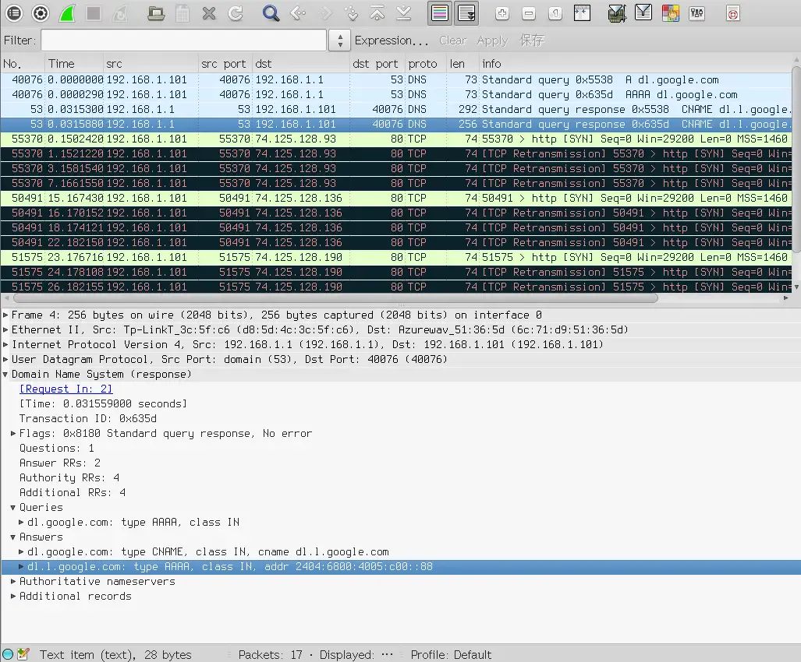

Bagaimana cara mendisable IPV6 pada Yum di Fedora dan Centos

Yum adalah package manager yang digunakan oleh Centos. Yum biasanya kita gunakan untuk mempermudah installasi, menghapus atau mengupdate aplikasi dari centos. Dalam pekerjaanya yum biasanya menggunakan dua tipe internet protokol IPV4 dan IPV6.

Namun masalahnya, terkadang perangkat dekstop atau server kita tidak selalu berada pada jaringan yang telah mendukung IPV6. Dalam beberapa kasus terjadi error seperti contoh berikut
[Errno 14] curl#7 - "Failed to connect to 2404:6800:4005:c00::88: Network is unreachable"
Nah dalam kesempatan ini kita akan memabahas bagaimana mendisable IPV6 pada aplikasi yum, sehingga setiap kita menginstall, mengupdate atau menghapus aplikasi pada centos, yum sebagai package manager akan selalu menggunakan IPV4.
Caranya cukup mudah, kita hanya perlu menambahkan ip_resolve=4 atau ip_resolve=ipv4 pada file /etc/yum.conf.1
Untuk menambahkan hal tersebut, buka terminal dan ketikan perintah berikut
echo "ip_resolve=4" >> /etc/yum.conf
Setelah itu restart perangkat dengan perintah
reboot
Sampai disini yum akan menggunakan IPV4 untuk seluruh aktivitas seperti installasi, update ataupun ugprade aplikasi.